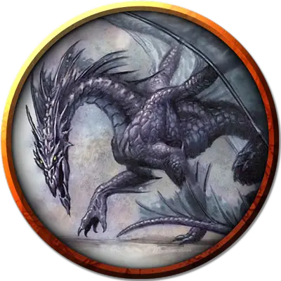

Каркетцеретцерус, Чёрный расхититель
Karkethzerethzerus, the Sable Despoiler
Громадный Дракон, законно-злой, именной НИП

Класс Доспеха 22 (природный доспех)
Хиты 487 (25к20 + 225)
Скорость 40 футов, летая 80 футов
| мод | спас | ||
|---|---|---|---|
| СИЛ | 30 | +10 | +10 |
| ЛОВ | 10 | +0 | +7 |
| ТЕЛ | 29 | +9 | +16 |
| мод | спас | ||
|---|---|---|---|
| ИНТ | 18 | +4 | +4 |
| МДР | 15 | +2 | +9 |
| ХАР | 23 | +6 | +13 |
Навыки Восприятие +16, История +11, Магия +11, Скрытность +14
Сопротивление урону некротическая энергия
Иммунитет к урону холод
Чувства слепое зрение 60 футов, тёмное зрение 120 футов, пассивное Восприятие 26
Языки Общий, Драконий
Опасность 23 (50000 опыта)
Бонус мастерства +7
Среда обитания Город, Горы
Особенности
Легендарное сопротивление (3/день). Если дракон проваливает спасбросок, он может вместо этого сделать спасбросок успешным.
Живая тень. Находясь в области тусклого свете или тьмы, дракон обладает сопротивлением ко всем видам урона кроме урона излучением, психической энергией и силовым полем.
Скрытность в тени. Находясь в области тусклого света или тьмы, дракон может совершать действие Засада бонусным действием.
Чувствительность к солнечному свету. Находясь на солнечном свету, дракон совершает с помехой броски атаки, а также проверки Мудрости (Восприятие), полагающиеся на зрение.
Действия
Мультиатака. Дракон может использовать Ужасающее присутствие. Затем он совершает три атаки: одну укусом, и две когтями.
Укус. Рукопашная атака оружием: +17 к попаданию, досягаемость 15 футов, одна цель. Попадание: 21 (2к10 + 10) колющего урона.
Коготь. Рукопашная атака оружием: +17 к попаданию, досягаемость 10 футов, одна цель. Попадание: 17 (2к6 + 10) рубящего урона.
Хвост. Рукопашная атака оружием: +17 к попаданию, досягаемость 20 футов, одна цель. Попадание: 19 (2к8 + 10) дробящего урона.
Ужасающее присутствие. Все существа на выбор дракона, находящиеся в пределах 120 футов от него и знающие о его присутствии, должны преуспеть в спасброске Мудрости Сл 21, иначе станут испуганными на 1 минуту. Существо может повторять этот спасбросок в конце каждого своего хода, оканчивая эффект на себе при успехе. Если спасбросок существа был успешным, или эффект на нём окончился, оно получает иммунитет к Ужасающему присутствию этого дракона на следующие 24 часа.
Оружия дыхания (перезарядка 5–6). Дракон использует один из следующих видов оружия дыхания.
• Холодное дыхание. Дракон выдыхает волну ледяного воздуха 90-футовым конусом. Все существа в этой области должны совершить спасбросок Телосложения Сл 24, получая 67 (15к8) урона некротической энергией при провале, или половину этого урона при успехе.
• Парализующее дыхание. Дракон выдыхает парализующий газ 90-футовым конусом. Все существа в этой области должны преуспеть в спасброске Телосложения Сл 24, иначе станут парализованными на 1 минуту. Существо может повторять этот спасбросок в конце каждого своего хода, оканчивая эффект на себе при успехе.
Смена формы. Дракон магическим образом превращается в гуманоида или зверя, чей показатель опасности не превышает его собственный, или принимает свой истинный облик. Он принимает свой истинный облик, если умирает. Всё снаряжение, которое он несёт или носит, сливается с новым обликом или используется им (на выбор дракона).
В новом облике дракон сохраняет мировоззрение, хиты, Кости Хитов, способность говорить, владения, Легендарные действия, действия логова, значения Интеллекта, Мудрости и Харизмы, а также действия. Все остальные характеристики и умения заменяются характеристиками и умениями нового облика, за исключением классовых умений и легендарных действий нового облика.
Легендарные действия
Дракон может совершить 3 легендарных действия, выбирая из представленных ниже вариантов. За один раз можно использовать только одно легендарное действие, и только в конце хода другого существа. Дракон восстанавливает использованные легендарные действия в начале своего хода.
Обнаружение. Дракон совершает проверку Мудрости (Восприятие).
Атака хвостом. Дракон совершает атаку хвостом.
Атака крыльями (стоит 2 действия). Дракон бьёт своими крыльями. Все существа в пределах 15 футов от дракона должны преуспеть в спасброске Ловкости Сл 25, иначе получат дробящий урон 17 (2к6 + 10) и будут сбиты с ног. После этого дракон может пролететь на расстояние, не превышающее половину скорости полёта.
Логово
Теневые драконы имеют доступ к действиям логова, которые могут использовать нетрансформированные драконы того же вида. Последствия этих действий могут быть косметически изменены, казаться более темными, мрачными и приглушенными. Они также могут наносить урон некротической энергией, вместо других типов урона. По вашему усмотрению легендарный (взрослый или древний) теневой дракон может использовать следующее дополнительное действие логова, находясь в своем логове:
Изгнание света. Любой немагический источник света в пределах сферы радиусом 60 футов, центрированной на драконе, гаснет, и любое заклинание, создающее свет в той же области, рассеивается.
Действия логова
При значении инициативы «20» (в случае ничьей проигрывает всем конкурентам) дракон совершает действие логова, чтобы вызвать один из следующих эффектов:
• Дракон создаёт туман, как будто наложив заклинание туманное облако [fog cloud]. Туман существует до показателя инициативы «20» в следующем раунде.
• Обжигающе холодные потоки воздуха дуют через логово в непосредственной близости от дракона. Все существа в пределах 120 футов от дракона должны преуспеть в спасброске Телосложении Сл 15, иначе получат урон холодом 5 (1к10). Газы и испарения разносятся ветром, незащищённое пламя тухнет. Защищённый огонь, например фонари, потухнут с 50 процентной вероятностью.
Местные эффекты
Когда теневой дракон основывает логово на Материальном плане, область вокруг логова приобретает некоторые характеристики Царства Теней, создавая один или несколько из следующих эффектов:
• Мрачное отчаяние. Существа в пределах 1 мили от логова дракона, имеющие показатель Интеллекта 5 или выше, чувствуют себя одинокими и отчаявшимися.
• Умирающий свет. Свет ослабляется в пределах 6 миль от логова дракона, слабо заслоняя местность мрачными тенями.
• Мрачные порталы. Некоторые гроты, пещеры, ямы и другие места глубоких теней в пределах 1 мили от логова дракона образуют порталы в Царство Теней, позволяя существам с этого плана обитать поблизости.